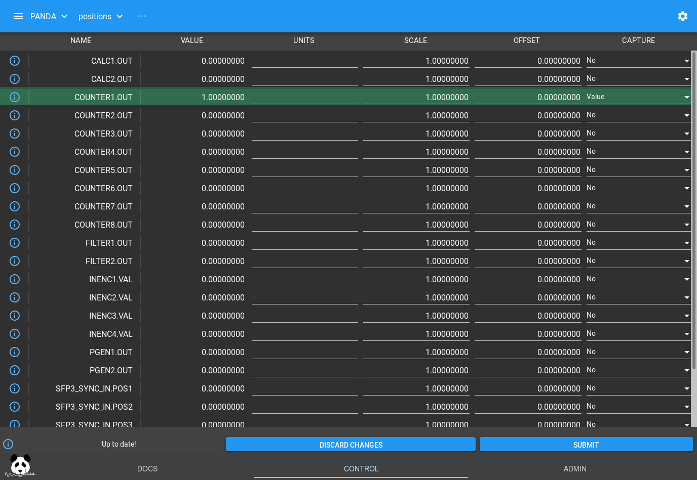

Position Capture Tutorial
This tutorial will introduce you to the Position Capture interface of PandABlocks, how to provide trigger signals to control when these capture points are taken and visualize the data.
Loading the tutorial design
Select “template_tutorial2_pcap” from the Design dropdown box and the settings and wiring of the Blocks in the PandA will be changed to the following:

How the design works
This design has two CLOCK Blocks, which are enabled as soon as the PCAP Block becomes active:
The first CLOCK is wired to PCAP trigger and gate. The gate is a level driven signal that provides the window of time that a capture should be active over. The trigger is an edge driven signal that actually captures data. In this example, PCAP.TRIG_EDGE=”Falling” so capture will be triggered on a falling edge of the trigger.
The second CLOCK is wired to a COUNTER, triggering the increment of the counter value.
We start off with both CLOCK Blocks set to a period of 1s, so each second the COUNTER will increment by one, followed by a PCAP trigger half a second later. This is best viewed as a timing diagram:
(Source code, png, hires.png, pdf)
{kind=link}
{kind=link}
What PCAP does on that trigger is determined by the PCAP Block settings, and the contents of the Bits and Positions tables. For Bits you can turn capture (instantaneous at the time of trigger) on and off. For Positions, you have a choice of:
Capture |
Description |
No |
Don’t capture |
Value |
Instantaneous capture at time of trigger |
Diff |
The difference in the value while gate was high |
Sum |
The sum of all the samples while gate was high |
Min |
The smallest value seen while gate was high |
Max |
The largest value seen while gate was high |
Mean |
The average value seen while gate was high |
Min Max |
Capture both Min and Max |
Min Max Mean |
Capture Min Max and Mean |
There are also a handful of other fields like the start of frame, end of frame and trigger time that can be captured by setting fields on the PCAP Block. If you click on the PCAP Block you will see them in the Outputs section:
In the inputs section of the PCAP Block we can see that we have set a delay of 1 for both the Trig and Gate. Delays on bit inputs are in FPGA clock ticks, and are there to compensate for different length data paths that need to be aligned. Each Block and each wire in PandA take 1 clock tick each. In this example, both COUNTER1 and PCAP are being triggered by a CLOCK in the same clock tick, but we want to delay the input to PCAP by one clock tick so that it sees the updated COUNTER1 value after the corresponding CLOCK rising edge.
Note
The delay fields of the PCAP Block are also shown as small badges on the input ports of the Block
We can set COUNTER1.OUT to capture the Value at trigger by modifying the Positions table and pressing Submit:
Now we can get a client ready to receive data. We can capture data in ASCII or Binary format as detailed in the TCP server documentation, and TANGO and EPICS have clients to do this. For this tutorial we will just use the ASCII format on the commandline to check:
$ nc <panda-ip> 8889
Here we could specify binary output and header format, but we’ll just stick with the default ASCII output (the default). Press Return again, and we will see:
OK
Now go back to the PandA layout and select the PCAP Block, pressing the ARM button. The Active light will go on and data will start streaming in the terminal window until Disarm is pressed:
missed: 0
process: Scaled
format: ASCII
fields:
COUNTER1.OUT double Value scale: 1 offset: 0 units:
1
2
3
4
END 4 Disarmed
This tallies with the timing diagram we saw above, the captured value matches the instantaneous value of COUNTER1.OUT when PCAP.TRIG went high.
We will now make the COUNTER1.OUT increment 5 times faster. Set CLOCK2.PERIOD to 0.2s, and click PCAP.ARM and you will see the captured value change:
missed: 0
process: Scaled
format: ASCII
fields:
COUNTER1.OUT double Value scale: 1 offset: 0 units:
3
8
13
18
END 4 Disarmed
If we look at the timing plot, we can see this also matched what we expect, the value is captured mid way through each increment of 5:
(Source code, png, hires.png, pdf)
{kind=link}
{kind=link}
Now let’s investigate the other options. If we change the Positions table so COUNTER1.OUT captures the Diff instead of Value then we will see it captures the difference between the value at the rising edge of the gate, and the falling edge:
missed: 0
process: Scaled
format: ASCII
fields:
COUNTER1.OUT double Diff scale: 1 offset: 0 units:
2
2
2
2
END 4 Disarmed
This again matches the timing plot, GATE rises when COUNTER was at 1, and falls at 3, then rises at 6 and falls at 8.
Note
If we hadn’t put in the 1 clock tick delays for Gate and Trig then we would see 3 rather than 2, as GATE would rise at 0 and fall at 3, then rise at 5 and fall at 8
This capture output is generally used with COUNTER Blocks connected to an input fed from a V2F to capture the total counts produced in a given time window.
If we change COUNTER1.OUT to capture Min Max and Mean, we will see the other options:
missed: 0
process: Scaled
format: ASCII
fields:
COUNTER1.OUT double Min scale: 1 offset: 0 units:
COUNTER1.OUT double Max scale: 1 offset: 0 units:
COUNTER1.OUT double Mean scale: 1 offset: 0 units:
1 3 1.8
6 8 6.8
11 13 11.8
16 18 16.8
END 4 Disarmed
Here we can see our min and max values as we expected, and also the Mean of the COUNTER value during the total gate:
# (sum of counter_value * time_at_value) / gate_time = mean
(1 * 0.2 + 2 * 0.2 + 3 * 0.1) / 0.5 = 1.8
(6 * 0.2 + 7 * 0.2 + 8 * 0.1) / 0.5 = 6.8
This capture output is generally used with encoders, to give the min, max and mean value of the encoder over a detector frame.
Conclusion
This tutorial has shown how to use the Position Capture interface of a PandA to capture entries on the position bus, and introduced the different capture types. It has also introduced the COUNTER block that is useful connecting to the pulse train produced by a V2F. In the next tutorial we will read about how to use position compare to generate triggers from position outputs, and how to configure position capture to work with it.